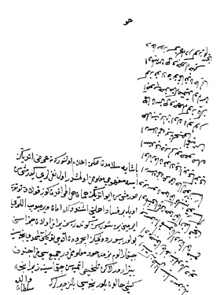

Belge 23
“Huwa
Paşaya selâmdan sonra i’lâm olunur ki: ne ‘arz ettiniz ise mefhûmu ma’lûmumuz olmuşdur. Ol neferleri gidermişsin sormuşsun, eyi etdiniz, hemân her etrâfdan göz kulak tutub öyle bir fesâd ehlini işitdükde amân vermeyüb elleri irmeyen yere süresiz, gönderesiz, yaramaz olan cezâsını bulur. Buyurduğınız içerüden âdemi-tevekkili şimdi nicesine çıkaralum, bizim de hôd ma’lûmumuzdur, cemî’si mizâcından bîzârdır; lâkin telhîs etmiyesin çıkmasına, zîrâ nice kişi hâlden bilür, nicesi bilmez, derler ki, işte gine taşrasının sözüyle âdem çıkarmağa başladılar deyü bir söz etmesünler, ortalık men’olmuş iken Hakk ta’âlâ insâfını versün, Hakk ta’âlâ kalbine kosa ki, Arslanıma ‘arzihâl sunsa ol zaman kolay idi, kendi istedi derler, bu husûsda Arslanıma bir telhîs etmiyesiz, helbet (elbette) yaramaz olan bulur; hemân siz her vechile gözünüz açub hidmetine mukayyed olasız, göz kulak tutmakdan hâlî olmayasız, her vechile hayr du’âmız sizinledir, göreyim seni. Vâlide Sultan.”
Yorum:
Bu belge helbet (elbet) sözcüğünü içerir, Kösem’e ait olduğuna kuşku yoktur.
Veziriâzam tarafından muhalif bazı kimselerin ortadan kaldırılmış olduğunu “eyi etdiniz” diye tebrik ediyor, “fesâd”cıların amansızca ortadan kaldırılmasını, uzak yerlere sürgün edilmesini emrediyor.
“İçerüden âdem” ifadesini Sarây-i Hümâyûn’daki bazı iç-oğlanları olarak anlıyoruz. Onları çıkma yoluyla dış hizmetlere atamak suretiyle uzaklaştırmak mümkün. Fakat bunu veziriâzamın Kösem’e resmî bir yazısıyla yapmayı tavsiye etmiyor, dedikodudan çekiniyor. Ortalık sakinleşmiş. Pâdişaha arzda bulunulmasını da onaylamıyor. Sadece veziriâzamın uyanık bulunmasını istiyor.

Bu belgede söz konusu fesâdcılar kimlerdir, nasıl bertaraf edilmişlerdir. Vekâyinâmelere göre: Kösem, Kara Murad’ı veziriâzam yaptıktan sonra (azli 21 Mayıs 1649) bazı “fesâd” hareketi kendini gösterdi.56 Veziriâzam Kara Murad, azledilen Sofu Mehmed Paşa yandaşlarının hareketlerinden rahatsızdı.57Harem’deki telaşın bir nedeni bu olabilir. Öbür taraftan Musa Paşa’nın veziriâzamlık için faaliyetleri dolayısıyla Kösem, bir “fesâd” hareketinden rahatsızdı. Arkasından şeyhülislâm Abdürrahim’in azli kıpırdamalara yol açtı.